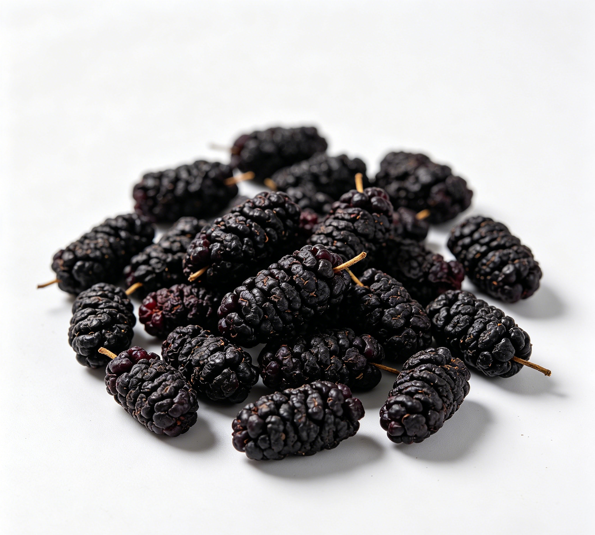

📋 基本信息
中文名桑椹
拉丁名Morus alba L.
英文名Mulberry Fruit
产地科属：桑科（Moraceae）桑属（Morus），拉丁学名Morus alba L.。生态环境：生于丘陵、山坡、村旁、田野，多为人工栽培，全国各地均有分布。主产地：江苏、浙江、湖南、四川、河北、新疆（南疆蚕桑区）、山东、安徽等地，以江浙、四川及新疆产者为多见。【《中华本草》《中药大辞典》】
性状本品为聚花果，由多数小瘦果集合而成，呈长圆形，长1～2cm，直径0.5～0.8cm。黄棕色、棕红色至暗紫色，有短果序梗。小瘦果卵圆形，稍扁，长约2mm，宽约1mm，外具肉质花被片4枚。气微，味微酸而甜。【《中国药典》2020年版一部】
用法用量9～15g。【《中国药典》2020年版一部】
贮藏置通风干燥处，防蛀。【《中国药典》2020年版一部】
☯ 传统属性
四气寒
五味甘、酸
归经心、肝、肾经
功能主治滋阴补血，生津润燥。用于肝肾阴虚，眩晕耳鸣，心悸失眠，须发早白，津伤口渴，内热消渴，肠燥便秘。【《中国药典》2020年版一部】
禁忌症脾胃虚寒便溏者慎服（或禁服）。【《中华本草》】
毒性桑椹食用安全性较高，偶见不良反应：①性味甘寒，过量食用可致腹痛、腹泻，脾胃虚寒者更易发生；②含糖量较高，血糖异常者过量食用不利于血糖控制；③古籍记载多食可致衄血，孕妇忌多食；④含较多鞣质，大量食用可能影响铁、钙等矿物质吸收，儿童不宜过量；⑤鲜果易腐败变质，食用霉变果实可致胃肠不适。药用剂量9～15g范围内一般安全。
适宜体质阴虚质、平和质、气虚质、痰湿质
适宜证型阴虚证、肺阴虚证、胃阴虚证、久泻证
🔬 现代研究
主要成分桑椹含糖类（葡萄糖、果糖、蔗糖）、有机酸（苹果酸、柠檬酸、鞣酸）、花青素类（以矢车菊素-3-葡萄糖苷、矢车菊素-3-芸香糖苷为主）、白藜芦醇及白藜芦醇苷、桑椹多糖、黄酮类（芦丁、槲皮素等）、维生素B1、B2、C及胡萝卜素，另含多种氨基酸与钾、钙、铁、锌、硒等矿物质；种子油脂肪酸以亚油酸为主，另含油酸、硬脂酸等。【《中药大辞典》及现代成分研究文献】
药理作用①增强免疫功能：桑椹煎剂对细胞免疫和体液免疫均有增强作用，能中度激发淋巴细胞转化，促进T淋巴细胞成熟；②促进造血：可促进造血细胞生长及粒系祖细胞增殖，对环磷酰胺所致白细胞减少有一定防治作用；③抗氧化、抗衰老：花青素、白藜芦醇、多糖等成分可清除自由基、抑制脂质过氧化；④降血糖、调血脂：桑椹多糖与花青素在动物实验中显示改善糖脂代谢作用；⑤润肠通便：富含膳食纤维与糖类，促进肠蠕动；⑥另有保肝、抗疲劳、改善记忆等报道。【《中华本草》及公开科研文献综述】
食疗功效桑椹甘酸而寒，药食两用，传统认为其补肝益肾、滋阴养血、生津润肠、乌发明目。《滇南本草》谓其'益肾脏而固精，久服黑发明目'。作为食疗果品，常用于阴血不足之头晕目眩、失眠健忘、须发早白、口干便秘等的调理，制成桑椹膏、桑椹酒、桑椹粥均为经典食疗方；现代营养学视其为富含花青素、白藜芦醇和铁元素的功能性水果，有助于抗氧化和改善缺铁性贫血。
食养禁忌
🏭 产品形态与潜在功能
推荐形态
饮片粉末提取物
潜在功能